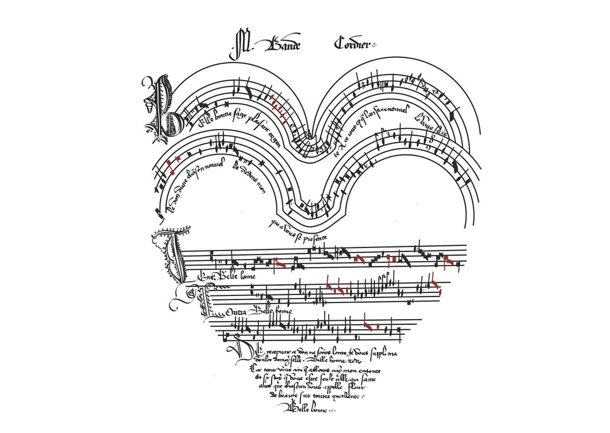
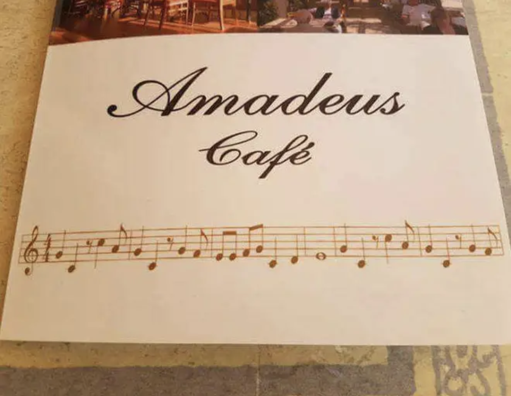

Class
TR - 1:10–2:15 pm
W Lab - 1:10–2:00 pm
Fine Arts Center M-140Drop in Office Hours
- MWF - usually before 3:00
- TR - before class, after 4:00
- or schedule an appointment
Wabash College • Music Department
Fall 2026
Welcome, everyone
This is your living syllabus: part roadmap, part contract, part FAQ.
At a glance
TR - 1:10–2:15 pm
W Lab - 1:10–2:00 pm
Fine Arts Center M-140Dr. Hunter Ewen,
Assistant Professor of Music
Pronounced "YOU-win" (he/him)
Coursework is on Canvas
Homework is on Artusi
Classroom Code of Conduct
An Artusi subscription is requiredHello everybody! Welcome to MUS130, musicianship! My name is Hunter Ewen, and I'll be your professor this semester. I'm really excited you're here, and I can't wait to start this journey with you.
Before class started, I wanted to make sure I reached out to reassure all of you that you're welcome here. Registering for a music class can sometimes be a little intimidating—some people assume you need 10 years of violin to be successful, and others assume it's a blow off class because they already know everything. Music can sometimes feel really competitive, and I want to dispel that before we get started. We're each on our own journey, and you are all in the right place!
Some of you are already musicians—and maybe really good ones. Some of you probably used to play an instrument, maybe in middle school or high school. Some of you have never played an instrument, but you just love listening to music. Some of you can read music, and some of you can't. All of that is okay. Music is a wide tent, and this is an introductory class.
My goal is that you improve your music reading, writing, listening, and music making skills by the end of the semester. I want to get you ready for one of my music theory classes in the future. And it's fine if you're starting from absolute zero. It's fine if you've played for years.
I want to help where if you want to pick up a guitar next spring, you can learn to play it. Or if you want to learn piano, you can read music well enough to start playing pieces on your own. Or if you play by ear now but want a little more formal training on the language and the math of music-making, I want to help you too! Or if you want to join the glee club...or do better at chapel sing...I want to help you get new skills you don't have right now.
We're going to focus in class on the Western European music-making tradition, in terms of reading and writing. That's the one used in American middle and high schools for the last hundred years. So we're not touching guitar tablature or Japanese katakana, or Indian konnakol or Javanese gamelan, or Middle Eastern maqam systems. We're going to focus on music that came out of Western Europe from a tradition developed around 400 years ago.
This class is going to be a little bit of everything. It's a bit like a "language arts" class—with a focus on reading and writing. It's a bit like a foreign language class, with listening and "speaking" the language of music. It's a bit of math and physics, some history, some performance, some PE maybe—certainly a lot of brain training.
Music is a language of communication, of opinion, of emotion. And I'm here to help grow your communication skills. So feel free to reach out. Visit my office. Keep me in the loop. Email, email, email!
In fact, if you made it to the end of this video, congratulations for fully engaging with this content! Send me an email right now, and I'll give you some bonus points!
Thank you for joining. I'm excited to get to know you better. Bye!
🎵 Erik Satie's Gymnopedie plays throughout 🎵
Welcome — Let's make some music together
Professor (Hunter) Ewen
I grew up in Lexington, Kentucky...playing soccer, horseback riding, and rock climbing. I went to college at Case Western Reserve University, where I was on the fencing team, Tau Beta Pi, and studied mechanical engineering and music (composition). I played the saxophone and studied a lot and didn't really know what I wanted to be when I grew up. I met my wife, Megan, there...she was studying biomedical engineering. We've been together since 2002!
I got my masters and doctorate afterwards—in music—at CU-Boulder. And after I graduated, I stuck around to teach music, technology, and media for a new department I helped found, Critical Media Practices.
I left CU in 2017 to move to Columbus, OH (and eventually Louisville, KY and New Albany, IN) and work in the music technology industry. My speciaty was building tools for empowering creativity, leading teams of music technologists at Amper Music, Shutterstock/PremiumBeat, and eventually BandLab. In a decade of industry work, I'm proud to have never trained an AI system using anyone else's music, never scraped a user's data, and never strayed from the ethical frameworks we established. At the time, I was still moonlighting as an educator (private lessons and teaching music/computer programming at IvyTech), but my days were spent leading teams and coding project.
In 2026, my wife and I packed up and moved to Crawfordsville, so I could get back to the thing I enjoyed most about my career—teaching! Nowadays, I love puzzles, making wine, food, bicycling, and other esoteric interests.

What we'll do
This is subject to change if needed and is only meant to give an estimate. Since we're using ungrading for evaluative feedback, this should only really give insight about how I'm conceptualzing and calculating your final grade. Specifics are on Canvas.
What to Bring
There is no textbook or other material required for the class, but a semester-length subscription to Artusi is required for completing assignments and training. All other work will be in-person or via Canvas.

How your work is evaluated
Much of this class is creative, and I want to foster an environment where you feel comfortable bringing that creativity without worrying too much about grades. To that end, my goals this semester are that you:
And to accomplish those goals, I’m using a system of evaluation called ungrading. Here’s what ungrading means:
Final grades, which are required by the college and contribute to your GPA, are determind (by me) as a summation of projects and assessments and any extra credit. There is no D+ or D-. See more information on credit/no credit and GPA on the Academic Policies page.
You are welcome to resubmit all or part of any work you feel could be improved (up until the final exam). And you may ask me to provide an estimate of your overall grade at any point in the semester.
How to do well in class
Wabash asks a great deal from its future leaders. It is not enough to attend class, to raise your hand, to ask questions. You must demonstrate leadership by helping foster our classroom community—by elevating voices around you. I have challenging and robust requirements for attendance, participation, and leadership based on accumulating tiers of engagement. Click below to learn more about each tier.